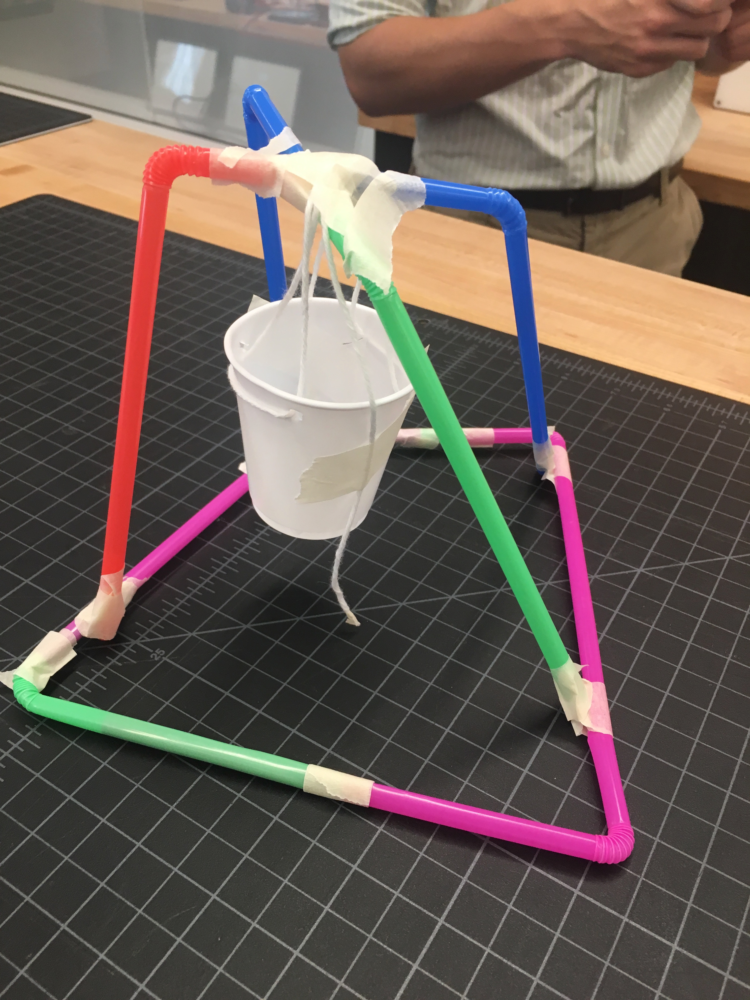

Rotation 1
Rotation 1:

Penny Holding Device
We were told to seperate into groups, and that our objective was to suspend a cup, which could hold as many pennies as possible. Our resources included: a cup. some string, a few straws, and some tape. I figured we could overlap the straws in our apparatus, which would give us a better system of support. We suspended the string over the overlapping straws, and made the base whith two layers of straws to offer more support. In the end, we were relatively successful and built a apparatus (pictured above) which was able to hold a fairly large amount of pennies (the full cup), with it collapsing when it had been filled to capacity. Looking back, the only group more successful than us used triangular shapes which offered much more support. Only discovering this after, we found that triangles are offer the most support and strength to structures, often being used even in large scale buildings.
<For another team excersise, we were told to stop a marble, from rolling off a table, trying to go as far as you could on the table. We had a few pencils, a few sheets of paper, a few straws, and the zone drawn out in tape where the marble needed to stop. We created the back of the landing zone, by using two pencils and the sides with pencils. In order for the marble to not roll back out we created a ramp. In orde to get the marble to the landing zone we taped the paper into cyndrilical shapes which we taped toward the landing zone. In the end, it was a success!
Home
About me
Rotation 1
Rotation 2
Rotation 3
Rotation 4
Rotation 5
Rotation 6
Rotation 7
Rotation 8
Rotation 9
Final Project